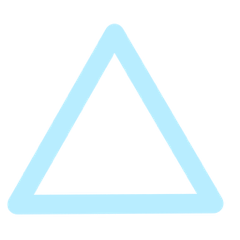
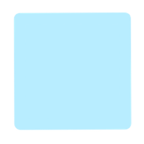
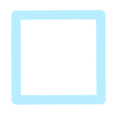
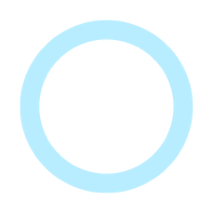
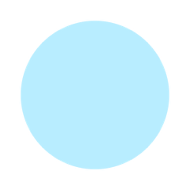
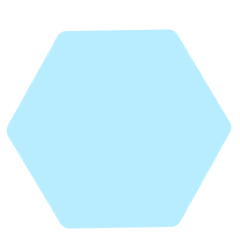
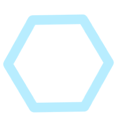
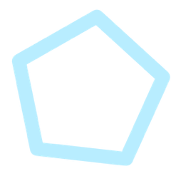
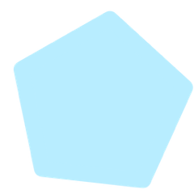
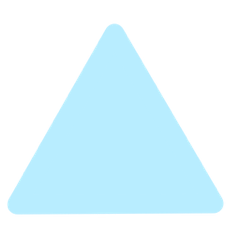

Works
主な実績
大阪・関西万博において運営ディレクターとして従事。大規模会場の全体進行を統括しました。
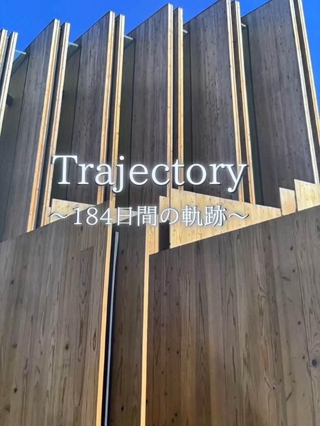
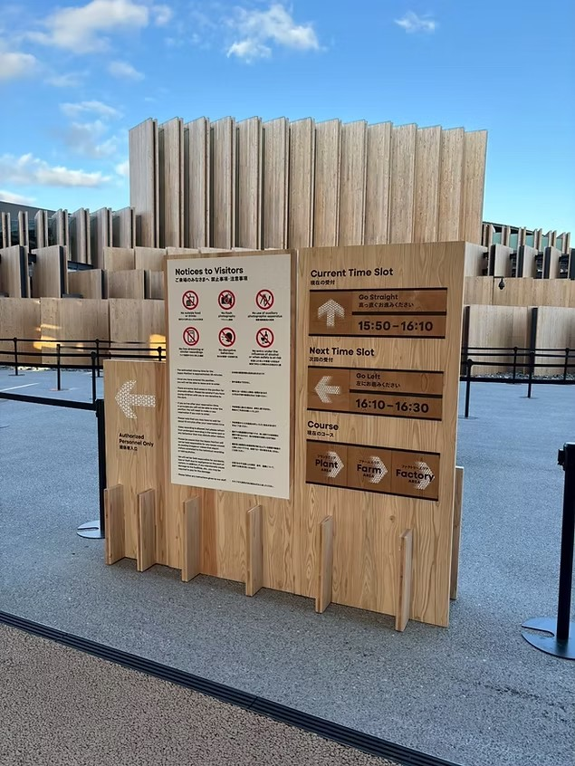
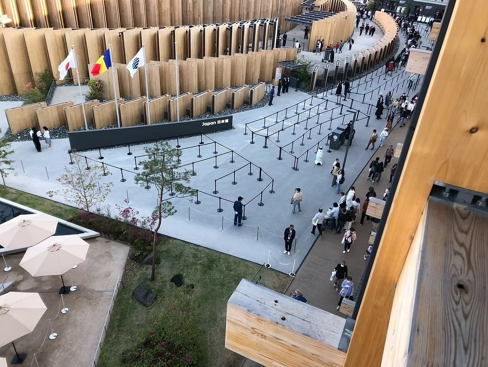
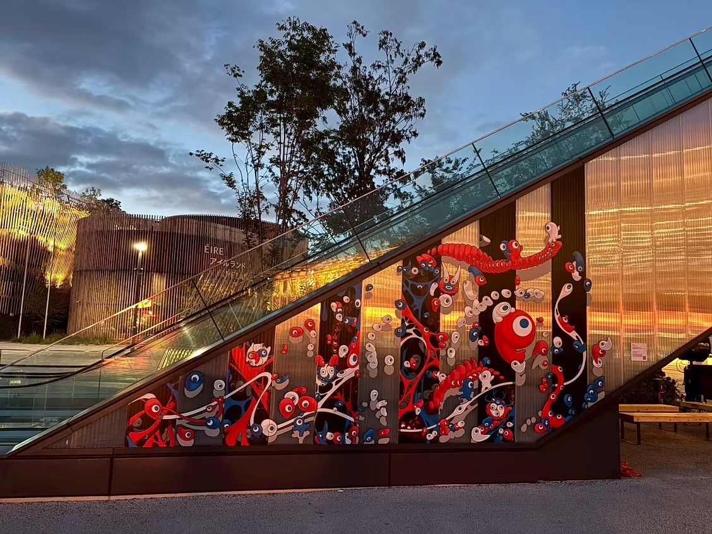
デフリンピックにおける運営管理・スタッフ管理を担当。円滑な大会運営をサポートしました。
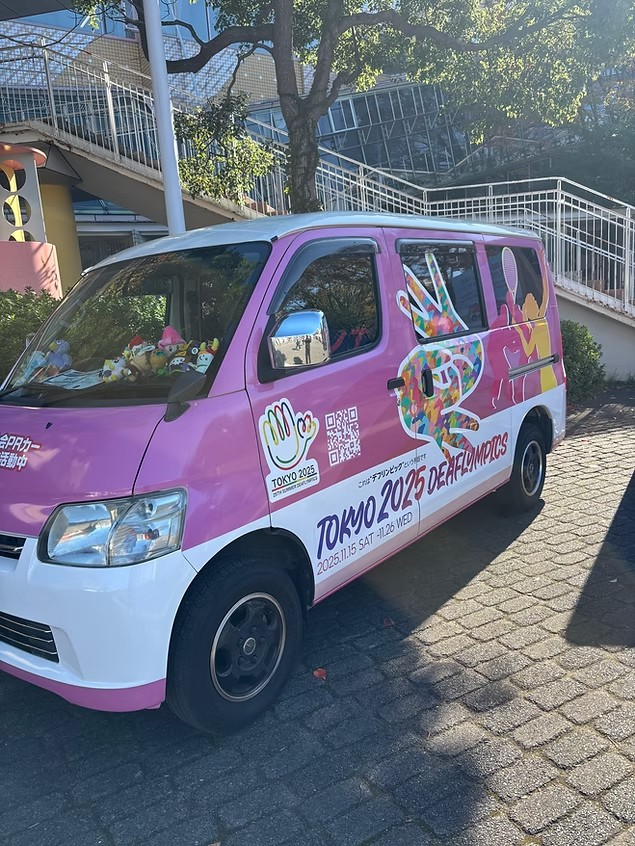
ライブイベントにおける会場運営・スタッフ管理を担当。来場者が安心して楽しめる空間を提供しました。
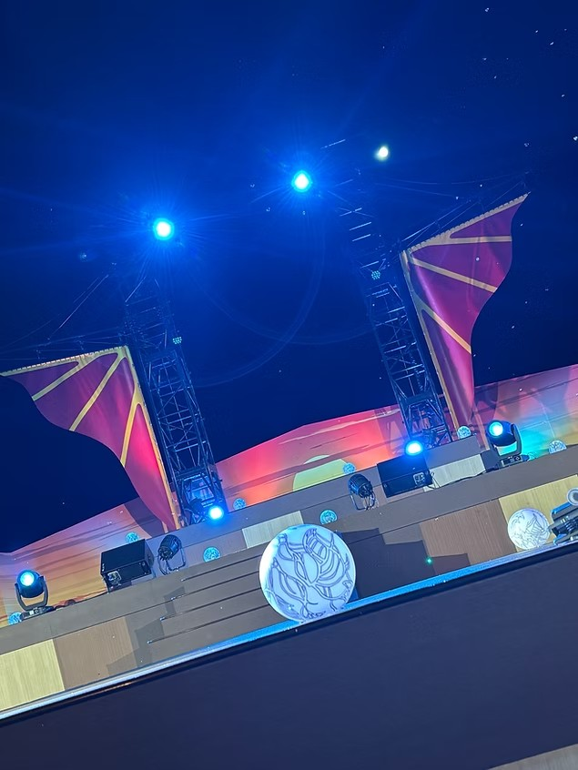
市役所でのプロジェクションマッピング・イルミネーションイベントの運営を担当。地域に光と感動を届けました。
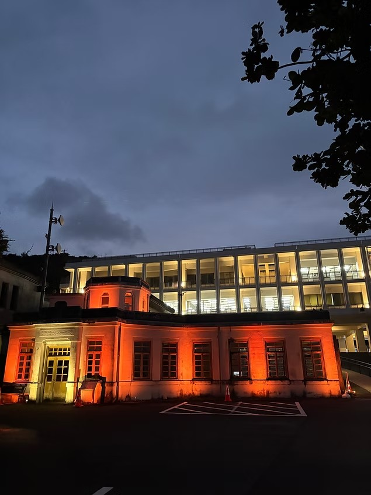
イルミネーションイベントの企画・運営を担当。幻想的な光の演出で来場者に特別な体験を提供しました。
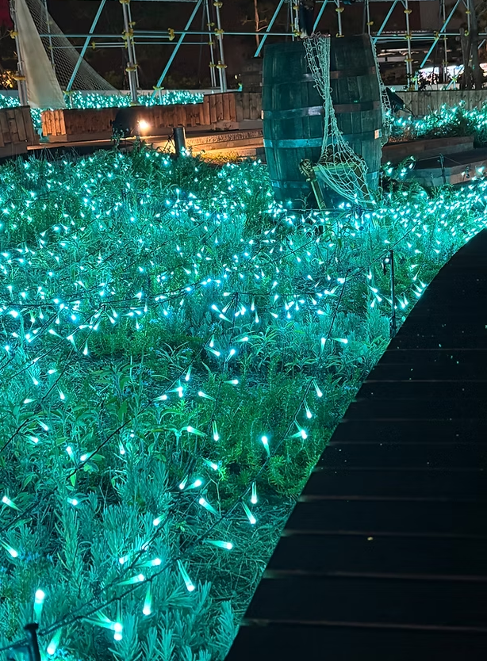
国立競技場におけるスポーツイベント運営を担当。大規模会場での安全管理と来場者体験の向上に尽力しました。
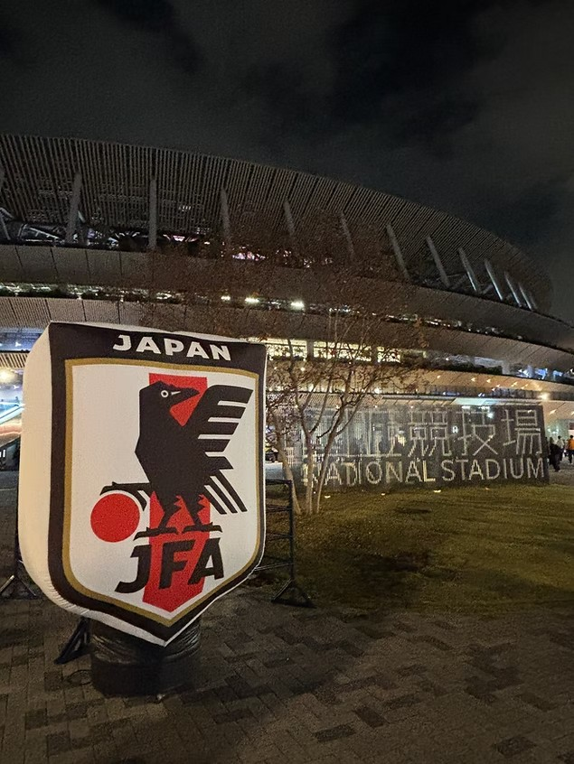
About
会社概要
| Company Name | 株式会社リングクラス |
|---|---|
| Founded | 2026年1月 |
| CEO | 代表取締役 浅野 貴光 |
| Business |
イベント企画・制作 イベント運営管理 ディレクター・ADサポート 語学対応スタッフ スタッフ手配 |
| Address |
〒564-0051 大阪府吹田市 エクラート江坂ビル 3階 |
| TEL / FAX | 06-6170-7187 |
| Bank | 三井住友銀行 / GMOあおぞらネット銀行 |
Track Record
主な実績一覧
国際的なスポーツ大会から日本最大規模の万博まで、
様々な現場で実績を積んでいます。